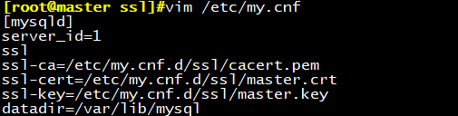

实验一：搭建主从复制
前期准备：
两台虚拟机
主服务器： CentOS7.4 192.168.30.10 提示符：蓝色
从服务器： CentOS7.5 192.168.30.18 提示符：黄色
主服务器：
vim /etc/my.cnf
[mariadb]
log-bin
server_id=1
log-basename=master 可选项
重启mysql服务使生效
systemctl restart mariadb
创建有复制权限的用户账号
masql> grant replication slave on . to repluser@’192.168.30.%’ identified by ‘centos’;
导入一个数据库hellodb
#mysql < hellodb_innodb.sql
此时查看当前使用的二进制日志：
masql> show master logs;
从服务器：
vim /etc/my.cnf
[mariadb]
server_id=2
read_only
重启mysql服务使之生效
systemctl restart mariadb
使用有复制权限的用户账号连接至主服务器，并启动复制线程
mysql> CHANGE MASTER TO
MASTER_HOST=’192.168.30.10′,
MASTER_USER=’repluser’,
MASTER_PASSWORD=’centos’,
MASTER_PORT=3306,
MASTER_LOG_FILE=’mariadb-bin.000001′,
MASTER_LOG_POS=245,
MASTER_CONNECT_RETRY=10;
开始从服务器复制
mysql>start slaves;
此时我们可以查看从服务器的工作状态
mysql> show slaves status\G;
此时我们看到从服务器已开始工作，并且已将主服务器的hellodb数据库复制过来
mysql> show databases;
切换到主服务器，继续测试，创建数据库db1
mysql> create database db1;
切换回从服务器，我们看到，从服务同步成功

实验二：为已存放大量数据的在用服务器搭建从服务器
前期准备：
主服务器数据库仍沿用实验一的主服务器，作为已运行且有数据的服务器
数据库初始信息如下：

从服务器为新环境下的服务器
主服务器：
vim /etc/my.cnf
[mariadb]
log-bin
server_id=1
innod_file_per_table 单表存储
log-basename=master 可选项，指定二进制文件前缀
重启mysql服务使之生效
systemctl restart mariadb
创建有复制权限的用户账号
masql> grant replication slave on . to repluser@’192.168.30.%’ identified by ‘centos’;
查看当前主服务器二进制日志状态

使用mysqldump全备份主服务器二进制日志
mysqldump -A -F –single-transaction –master-data=1 > all.sql
复制到新的从服务器
scp all.sql 192.168.30.18:/
从服务器：
[mariadb]
server_id=2
read_only 只读，防止普通用户修改
重启mysql服务
systemctl restart mysql
修改全备份添加入主服务器信息：
vim all.sql
找到此行
替换为：
CHANGE MASTER TO
MASTER_HOST=’192.168.30.10′,
MASTER_USER=’repluser’,
MASTER_PASSWORD=’centos’,
MASTER_PORT=3306,
MASTER_LOG_FILE=’mariadb-bin.000002′,
MASTER_LOG_POS=245,
MASTER_CONNECT_RETRY=10;
在从服务器上导入全备份
mysql < all.sql
此时我们看到全备份中数据库已导入成功

开启从服务器复制
mysql> start slave;
查看从服务器工作状态，已开始正常工作
mysql> show slave status;
切换到主服务器，继续测试，创建数据库db2
mysql> create database db2;
切换回从服务器，我们看到，从服务同步成功
实验三：级联复制
前期准备：
三台虚拟机
主服务器： CentOS7.4 192.168.30.10 提示符：蓝色
中间从服务器： CentOS7.5 192.168.30.18 提示符：黄色
从服务器： CentOS7.5 192.168.30.19 提示符：红色
主服务器：
vim /etc/my.cnf
[mariadb]
log-bin
server_id=1
重启mysql
systemctl restart mariadb
创建有复制权限的用户账号
masql> grant replication slave on . to repluser@’192.168.30.%’ identified by ‘centos’;
中间从服务器：
vim /etc/my.cnf
[mariadb]
log-bin
server_id=2
log_slave_updates
read_only

重启mysql服务
systemctl restart mariadb
填写master服务信息，即主服务器信息
mysql> CHANGE MASTER TO
MASTER_HOST=’192.168.30.10′,
MASTER_USER=’repluser’,
MASTER_PASSWORD=’centos’,
MASTER_PORT=3306,
MASTER_LOG_FILE=’mariadb-bin.000001′,
MASTER_LOG_POS=245,
MASTER_CONNECT_RETRY=10;
开启从服务器
start slave;
从服务器：
vim /etc/my.cnf
[mariadb]
server_id=3
read_only
重启mysql服务
systemctl start mariadb
指定主服务器，即中间从服务器
mysql> CHANGE MASTER TO
MASTER_HOST=’192.168.30.18′,
MASTER_USER=’repluser’,
MASTER_PASSWORD=’centos’,
MASTER_PORT=3306,
MASTER_LOG_FILE=’mariadb-bin.000001′,
MASTER_LOG_POS=245,
MASTER_CONNECT_RETRY=10;
开启从服务
mysql> start slave;
查看从服务器工作状态
mysql> show slave status;
测试：
主服务器导入hellodb数据库，测试是否同步成功
#mysql < hellodb_innodb.sql
中间服务器，我们看到hellodb数据库已同步成功
再切换至从服务器，hellodb数据库也同步成功，至此我们实现了数据库服务器的级联复制
实验四：提升一个从服务器为主服务器
模拟场景：
当主服务器出现损坏时，我们需要提升一台从服务器作为主服务器使用，由于每台从服务器同步的数据完
整情况可能不同，所有第一步应该选出数据同步最完整的从服务器。
那么，如何查看同步数据的完整性呢？
当slave开启成功后，会在mysql目录下生产一个master.info的文件，里面统计的是master服务器的相关信
息，其中介于二进制文件名与主机名之间的数字即为已同步数据量，我们只需要打开每一台从服务器，观
察这个值，取最大的一台从服务器即可
cat /var/lib/mysql/master.info
将此从服务器配置修改为主服务器配置
[mariadb]
log-bin
server_id=1
再将其他从服务器的master重新执行此台从服务器即可
清除其他从服务器原有master配置信息
mysql> reset slave all;
mysql> CHANGE MASTER TO
MASTER_HOST=’192.168.30.XX’,
MASTER_USER=’repluser’,
MASTER_PASSWORD=’centos’,
MASTER_PORT=3306,
MASTER_LOG_FILE=’mariadb-bin.00000X’,
MASTER_LOG_POS=XXX,
MASTER_CONNECT_RETRY=10;
实验五：主主复制
主主复制：互为主从
容易产生的问题：数据不一致；因此慎用
前期准备：
虚拟机2台
主服务器1： CentOS7.4 192.168.30.10 提示符：蓝色
主服务器2： CentOS7.5 192.168.30.18 提示符：黄色
主服务器1：
vim /etc/my.cnf
log-bin
server_id=1
auto_increment_offset=1
auto_increment_increment=2 #自动递增，避免数据冲突，当三台互为主从，改为3
重启mysql服务
systemctl restart mariadb
创建账号
masql> grant replication slave on . to repluser@’192.168.30.%’ identified by ‘centos’;
互相添加master配置为对方：
mysql> CHANGE MASTER TO
MASTER_HOST=’192.168.30.18′,
MASTER_USER=’repluser’,
MASTER_PASSWORD=’centos’,
MASTER_PORT=3306,
MASTER_LOG_FILE=’mariadb-bin.000001′,
MASTER_LOG_POS=245,
MASTER_CONNECT_RETRY=10;
mysql> start slave;
主服务器2：
vim /etc/my.cnf
log-bin
server_id=2
auto_increment_offset=2
auto_increment_increment=2
重启mysql服务
systemctl restart mariadb
创建账号
masql> grant replication slave on . to repluser@’192.168.30.%’ identified by ‘centos’;
添加master配置：
mysql> CHANGE MASTER TO
MASTER_HOST=’192.168.30.10′,
MASTER_USER=’repluser’,
MASTER_PASSWORD=’centos’,
MASTER_PORT=3306,
MASTER_LOG_FILE=’mariadb-bin.000001′,
MASTER_LOG_POS=245,
MASTER_CONNECT_RETRY=10;
mysql> start slave;
测试：
主服务器1创建db1数据库：
mysql> create database db1;
主服务器2创建db2数据库：
mysql> create database db1;
分别查看两台主服务器均同步成功
当在主服务器1数据库中不指定ID添加数据时，默认以奇数递增；同理主服务2默认以偶数递增；主主复制
就是通过此种方法来避免数据可能出现的冲突。
实验六：半同步复制
应用场景：
默认情况下，MySQL的复制功能是异步的，这就会造成主服务器和从服务器的数据不一致，甚
至在恢复时造成数据的丢失。半同步复制能够使从服务器始终有一台数据与主服务器保持一致，避免出现
数据丢失。在生产环境中，一般都要搭建半同步复制。
主服务器需要安装的mysql插件：semisync_master.so
从服务器需要安装的musql插件：semisync_slave.so
主服务器：
安装semisync_master.so插件
mysql> INSTALL PLUGIN rpl_semi_sync_master SONAME ‘semisync_master.so’;
查看master半同步相关变量：
mysql> show global variables like ‘%semi%’;
启用master半同步功能
mysql> set global rpl_semi_sync_master_enabled=on;
从服务器：
同理在从服务器安装semisync_slave.so
mysql> INSTALL PLUGIN rpl_semi_sync_master SONAME ‘semisync_slave.so’;
mysql> show global variables like ‘%semi%’;
启用slave半同步功能
mysql> set global rpl_semi_sync_slave_enabled=on;
至此，主从服务器的半同步复制就搭建完成了
实验七：实现主从SSL加密复制
前期准备：
三台虚拟机
CA： CentOS7.4 192.168.30.10 提示符：蓝色
主服务器： CentOS7.5 192.168.30.20 提示符：黄色
从服务器： CentOS7.5 192.168.30.17 提示符：红色
生成CA的私钥
cd /etc/my.cnf.d/ssl
openssl genrsa 2048 > cakey.pem
生成自签名
openssl req -new -x509 -key cakey.pem -out cacert.pem -days 3650

ls /etc/my.cnf.d/ssl
cacert.pem
cakey.pem
在本机生成master和slave的私钥
同时生成主服务器的私钥和签名请求
openssl req -newkey rsa:2048 –days 365 -nodes -keyout master.key > master.csr
CN
beijing
beijing
magedu.com
opt
master.magedu.com
颁发证书
openssl x509 -req -in master.csr -CA cacert.pem -CAkey cakey.pem -set_serial 01 > master.crt
此时ssl目录下的文件有

继续生成从服务器的私钥和签名请求
openssl req -newkey rsa:2048 -days365 -nodes -keyout slave.key > slave.csr
CN
beijing
beijing
magedu.com
opt
slave.magedu.com
颁发证书
openssl x509 -req -in slave.csr -CA cacert.pem -CAkey cakey.pem -set_serial 01 > slave.crt
此时ssl目录下文件有
scp -r /etc/my.cnf.d/ssl 192.16.30.17:/etc/my.cnf.d
scp -r /etc/my.cnf.d/ssl 192.16.30.27:/etc/my.cnf.d
master 服务器保留下列文件 cacert.pem master.crt master.key
slave 服务器保留下列文件 cacert.pem slave.crt slave.key
Master服务器配置
[mysqld]
log-bin
server_id=1
ssl
ssl-ca=/etc/my.cnf.d/ssl/cacert.pem
ssl-cert=/etc/my.cnf.d/ssl/master.crt
ssl-key=/etc/my.cnf.d/ssl/master.key
重启mysql服务
systemctl retart mariadb

查看是否生效
mysql> show variables like ‘%ssl’
创建用户且要求必须以加密方式连接
masql> grant replication slave on . to repluser@’192.168.30.%’ identified by ‘centos’ require ssl;
可以在slave端测试replusr用户用ssl连接
mysql -urepluser -pcentos -h192.168.30.17 –ssl-ca=cacert.pem –ssl-cert=slave.crt –ssl-key=slave.key
slave服务器配置
第一种方法：CHANGE MASTER TO
[mysqld]
serverid=2
ssl
重启mysql服务
systemctl restart mariadb
查看是否生效
mysql> show variables like ‘%ssl’
配置master服务器信息
mysql> CHANGE MASTER TO MASTER_HOST=’192.68.30.20′,
MASTER_USER=’repluser’,
MASTER_PASSWORD=’centos’,
MASTER_PORT=3306,
MASTER_LOG_FILE=’ mariadb-bin.000001′,
MASTER_LOG_POS=245,
MASTER_CONNECT_RETRY=10,
MASTER_SSL=1,
MASTER_SSL_CA = ‘/etc/my.cnf.d/ssl/cacert.pem’,
MASTER_SSL_CERT = ‘/etc/my.cnf.d/ssl/slave.crt’,
MASTER_SSL_KEY = ‘/etc/my.cnf.d/ssl/slave.key’;
开启从服务器
mysql> start slave
测试：
master创建一个数据库
查看slave是否同步
第二种方法：写入配置
stop slave;
reset slave all;
[mysqld]
log-bin
server_id=2
ssl
ssl-ca=/etc/my.cnf.d/ssl/cacert.pem
ssl-cert=/etc/my.cnf.d/ssl/slave.crt
ssl-key=/etc/my.cnf.d/ssl/slave.key
master服务器：
mysql> show master logs;
000002 493
slave服务器：
mysql> CHANGE MASTER TO MASTER_HOST=’192.68.30.17’，
MASTER_USER=’repluser’,
MASTER_PASSWORD=’centos’,
MASTER_PORT=3306,
MASTER_LOG_FILE=’master-bin.000002′,
MASTER_LOG_POS=493,
MASTER_CONNECT_RETRY=10;
MASTER_SSL=1